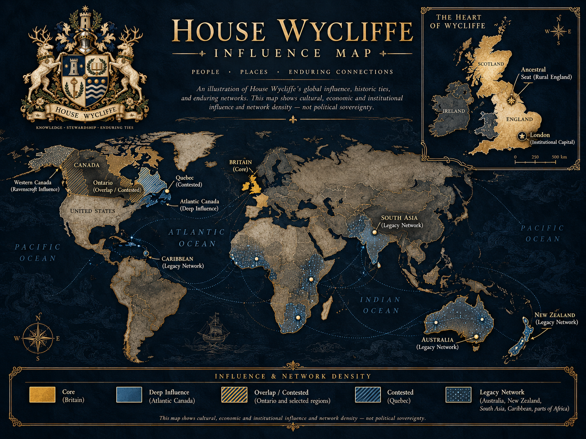

1

Temporary file: 01.png
House Wycliffe • Temporary Review
Numbered staging assets • not final placement
Verification
Use the numbers below to identify which image is which. After approval, these will be renamed to permanent semantic paths and placed on the live House page.
Temporary file: 01.png
Temporary file: 02.png
Temporary file: 03.png

Temporary file: 04.png

Temporary file: 05.png